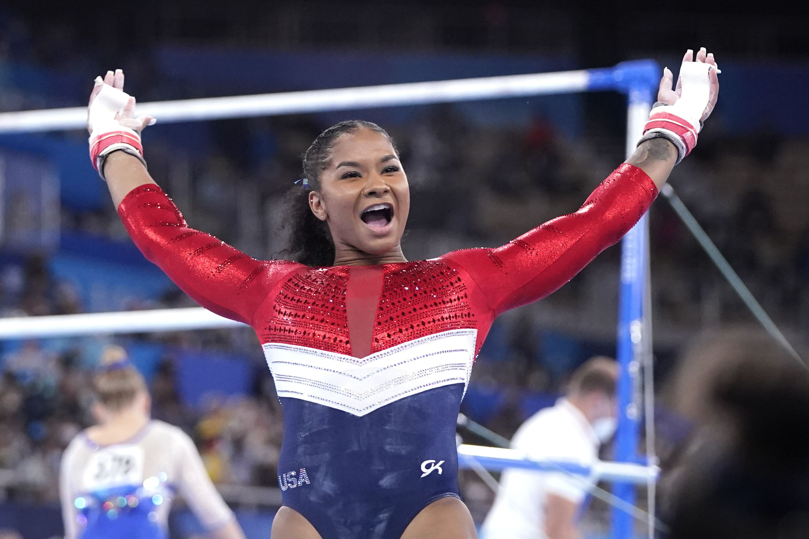
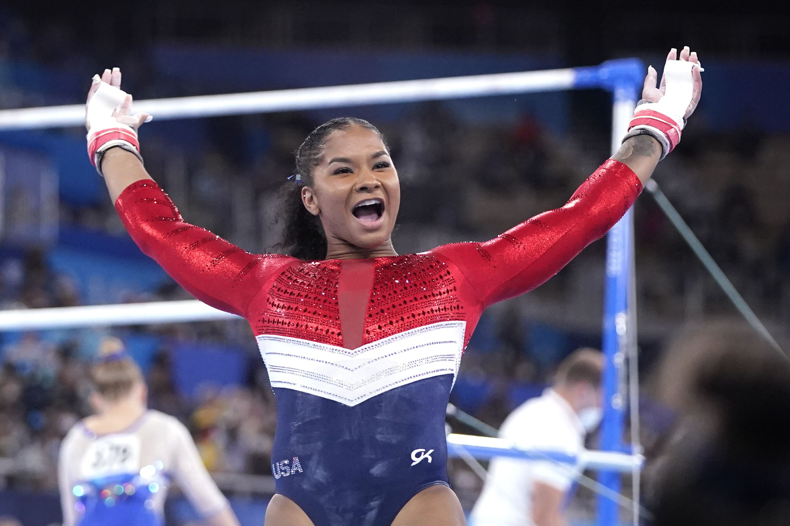

The Summer 2021 Olympics
At the Olympic Games Chiles performed the all-around during qualifications. She finished 40th after struggles on multiple events: on uneven bars she brushed her feet on the ground during a transition between the bars, incurring a deduction equivalent to that of a fall; on balance beam she fell on her acrobatic series and put her hands down on her dismount. Her performance helped qualify the USA team to the team final in second place behind the Russian Olympic Committee.
During the team final Chiles was initially set to compete only on vault and floor exercise. However, Simone Biles withdrew from the competition after the first rotation and Chiles replaced her on uneven bars and balance beam. She hit both of those routines despite not having warmed up on either, but fell on her third pass on floor exercise. The United States won the silver medal, finishing second behind the Russian Olympic Committee.

 
